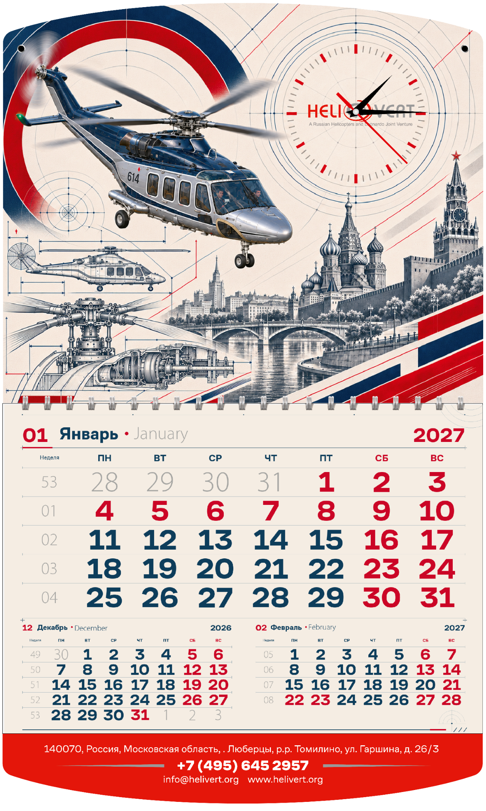

01 / 04
GARUSS × HELIVERT
ВРЕМЯ
НА ВЫСОТЕ.
Квартальные календари 2027
Авиация, город и точность.
Четыре взгляда на календарь,
который всегда перед глазами.
ПРЕЗЕНТАЦИЯ ДИЗАЙНА01 — 04
HELIVERT / 2027

ЧЕТЫРЕ КОНЦЕПЦИИ. ОДНА ВЫСОТА.01 / ИДЕЯ ПРОЕКТА
Большая история.
В ежедневном формате.
Вертолёт становится главным героем, Москва — пространством полёта, а часы связывают образ с назначением календаря. Общая конструкция объединяет четыре разных визуальных решения.
2027год календаря
3 месяцаодновременно в поле зрения
4 идеидля выбора направления
02 / КОНЦЕПЦИИ
Выберите
свою высоту.
Переключайте варианты.
Нажмите на макет, чтобы рассмотреть детали.
03 / ОБЩЕЕ В ДЕТАЛЯХ
Образ работает.
Календарь — тоже.
Время и авиация
Часы встроены в верхнюю иллюстрацию. Их круглая форма поддерживает ритм винтов и связывает тему полёта с течением времени.
Три месяца рядом
Текущий месяц набран крупно, соседние расположены ниже. Взгляд сразу находит нужную дату и ближайшие недели.
Квадратный курсор
Квадратная рамка лучше подходит к геометрии календарной сетки. Она выделяет нужную дату, не закрывает цифры и сохраняет читаемость месяца. Для финальной версии рекомендуем этот вариант.
04 / СРАВНЕНИЕ
Разница
видна рядом.
Выберите от двух до четырёх вариантов.
Откройте любой из них крупно.
От направления —
к финальному макету.
Выберите концепцию для дальнейшей доработки.
Выбор сохранится в этом браузере.